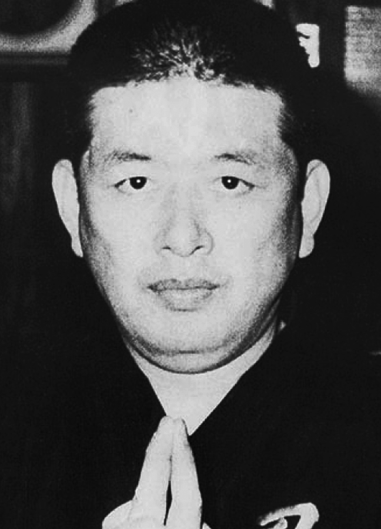

Koto Ryû Koppojutsu

"Tiger Knocking Down School"
Dr. Hatsumi is the 18th Soke

Overview:
This school emphasizes using the opponent’s bone structure and skeleton to defeat him. Strikes are generally targeted to areas that disrupt spinal alignment and locks are applied in the same fashion. The school's koppojutsu consists mostly of striking with some joint locks and throws. Also taught in this school are Ken Jutsu (sword arts), Shuriken Jutsu (throwing blades), and Tanto Jutsu (Knife arts). It has been said that this school along with Gyokko Ryû form 50% of Bujinkan training because of how well they complement each other. Koto Ryû uses short distances between opponents – Gyokko Ryû uses long distances.
Koto Ryû uses a direct strategy with techniques that are quick and straight to the point – Gyokko Ryû's techniques are more complex favoring indirect attacks. Koto Ryû concentrates on striking – Gyokko Ryû on locks and throws. It is thought that the Koto Ryû came from China via Korea, by Chan Busho, a Chinese warrior. The school was eventually passed on to Sogyokkan Ritsushi who was also Soke of Gyokko Ryû and with him, the two schools were brought completely together. Regardless of this they were taught and passed on to the next generation as separate schools within the same lineage.
Lineage of Koto Ryû:
- Sakagami, Taro Kunishige -Tembun era (1532)
- Sakagami, (Bando) Minamoto Masahide -Tembun era (1532)
- Sogyokkan, Ritsushi -Tembun era (1532)
- Toda, Sakyo Ishinsai -Tembun era (1532)
- Momochi, Sandayu I -Tembun era (1532) (died 1581)
- Momochi, Sandayu II -Tensho era (1573)
- Momochi, Tanba Yasumitsu -Bunroku era (1595)
- Momochi, Taro Saemon -Genna era (1615)
- Toda, Seiryu Nobutsuna -Kwanyei era (1624)
- Toda, Fudo Nobuchika -Manji era (1658)
- Toda, Kangoro Nobuyasu -Tenna era (1681)
- Toda, Eisaburo Nobumasa -Hoyei era (1704)
- Toda, Shingoro Masayoshi -Shotoku era (1711)
- Toda, Daigoro Masayoshi -Gembun era(1736)
- Toda, Daisaburo Chikashige -Bunkwa era (1804)
- Toda, Shinryuken Masamitsu (Kobe) 1824-1908
- Takamatsu, Toshitsugu Uoh (Nara) Taisho (1909) 1887-1972
- Hatsumi, Masaaki (Noda) Showa (1968) 1931-